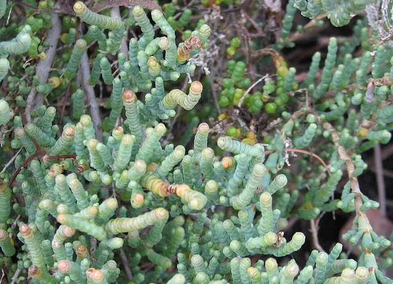

Sauces, preserves & sides
Pickled samphire
Pickled samphire is made with wild samphire.

How do you make pickled samphire?
Samphire tips in spiced vinegar.
Wild ingredients
- Samphire (Tecticornia): in season September to March
Pickled samphire is made with wild samphire.

Samphire tips in spiced vinegar.